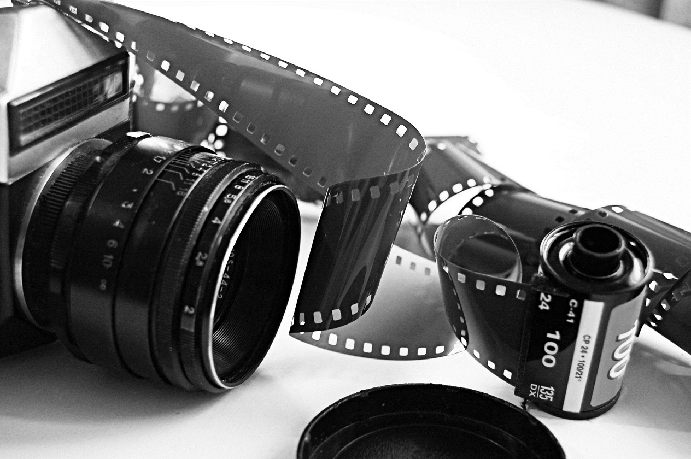

📌 Fotografia

La fotografía es el arte y la técnica de capturar imágenes fijas mediante la acción de la luz sobre una superficie fotosensible. En la actualidad, esa superficie puede ser: Química (película fotográfica en cámaras analógicas). Digital (sensores CCD o CMOS en cámaras y celulares).
📌 Breve historia
Siglo XIX: nace la primera fotografía permanente (Joseph Nicéphore Niépce, 1826). Daguerrotipo (1839): primer procedimiento fotográfico público. Fotografía en película: popularizada por George Eastman (Kodak) a finales del siglo XIX. Fotografía digital (década de 1970): con sensores electrónicos en lugar de película. Hoy en día: cámaras digitales y teléfonos móviles dominan la producción fotográfica.
📌 Tipos de fotografía
Fotografía artística: busca expresar emociones o creatividad. Fotografía documental: registra hechos reales (historia, noticias). Fotografía publicitaria: para marketing y ventas. Fotografía científica: usada en medicina, astronomía, biología, etc. Fotografía personal: recuerdos familiares, viajes, eventos.
📌 Elementos clave en fotografía
Luz: el factor más importante; determina colores, sombras y atmósfera. Composición: cómo se organizan los elementos dentro del encuadre. Enfoque: nitidez de la imagen. Exposición: combinación de velocidad de obturación, apertura del diafragma e ISO. Óptica (lentes): permiten controlar perspectiva, distancia y profundidad de campo.
📌 Ventajas de la fotografía digital
Permite ver y editar las fotos al instante. Almacenamiento masivo sin necesidad de revelar. Fácil de compartir en medios digitales. Reducción de costos en comparación con la fotografía química.